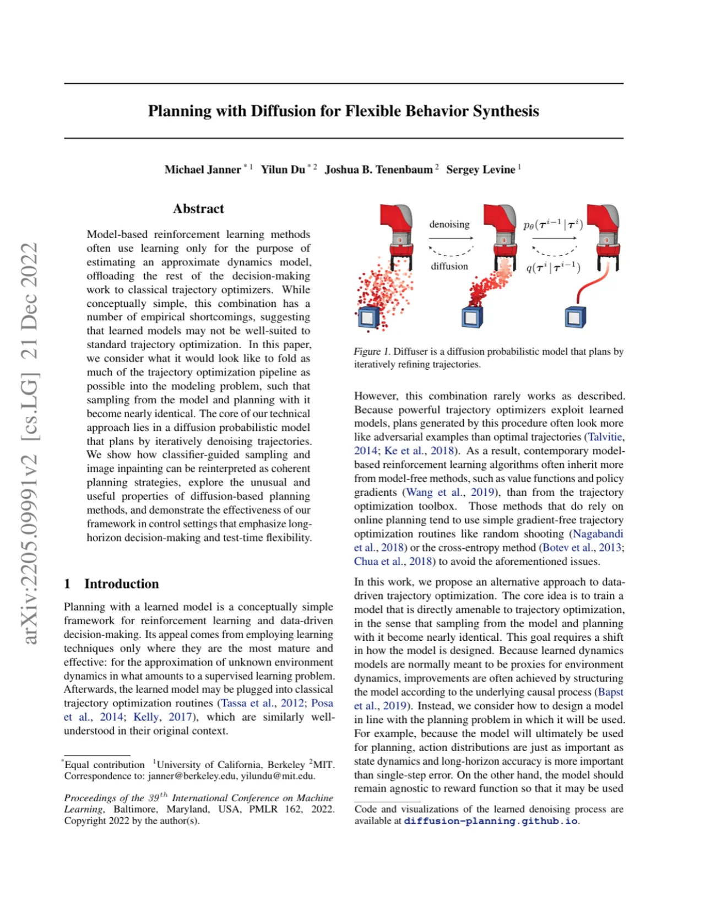
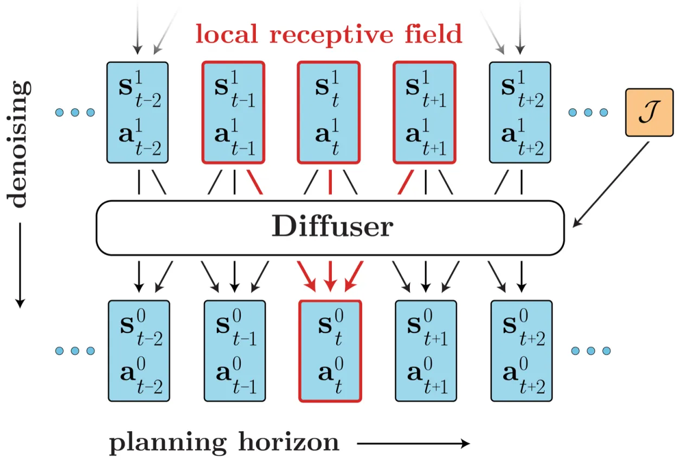
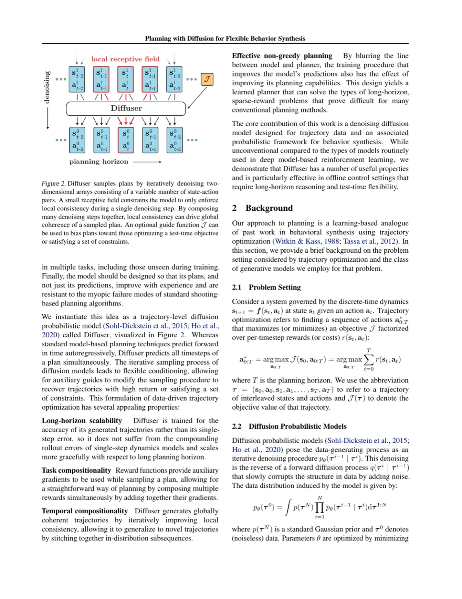
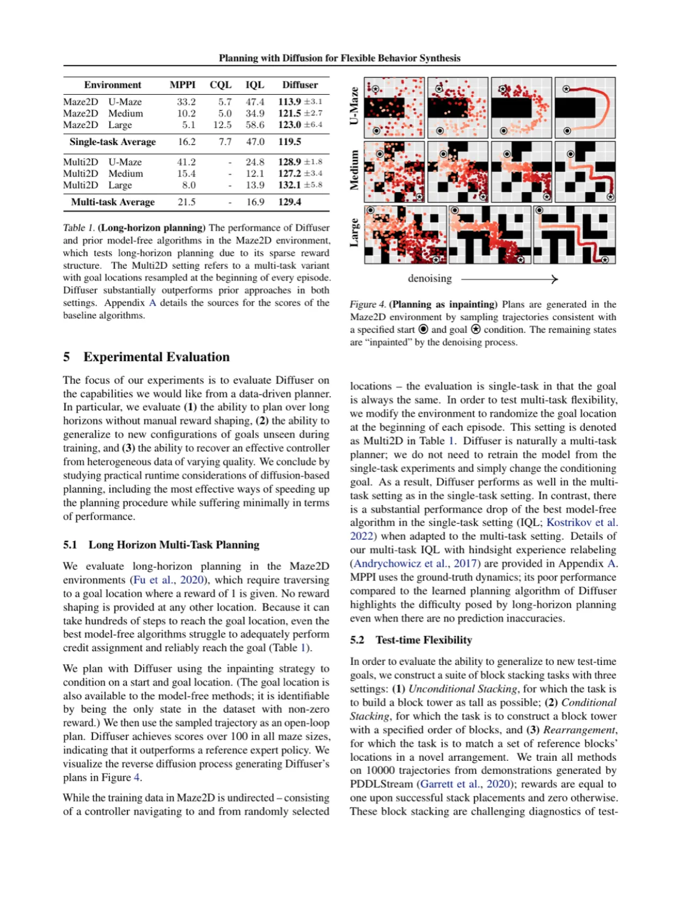
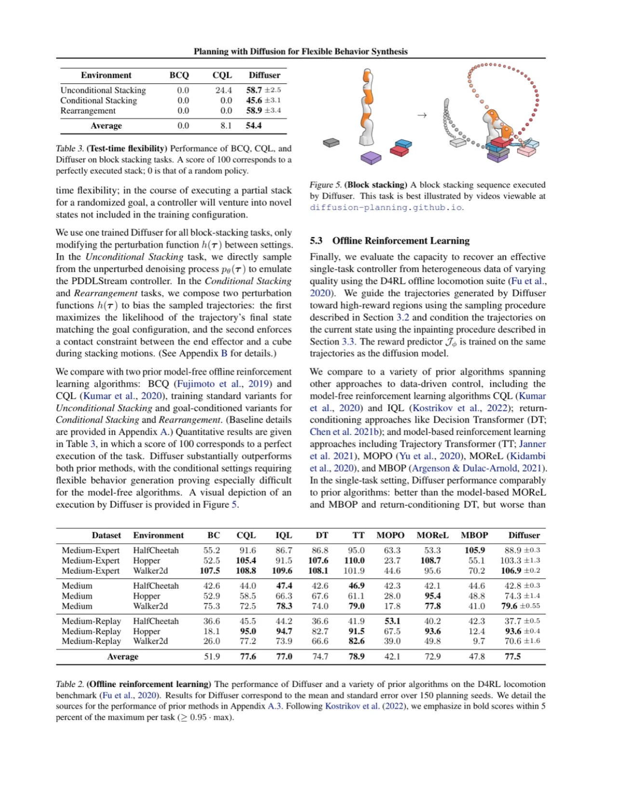
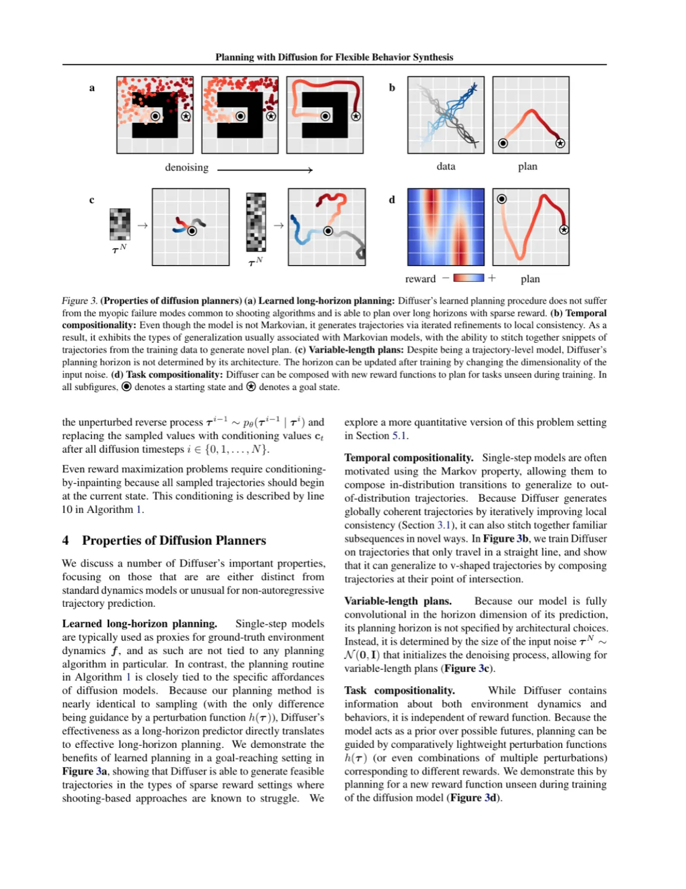

Diffuser 将轨迹优化直接嵌入扩散概率模型的训练过程，使"从模型采样"与"用模型规划"几乎等价。通过对噪声轨迹的迭代去噪，Diffuser 天然支持长视野规划、可变规划窗口，以及基于奖励梯度或目标约束的灵活 test-time 任务适配，无需重新训练。
基于模型的强化学习通常将动力学建模与轨迹优化分离：先学一个近似动力学模型，再将其接入经典规划器。然而，这两个步骤在实践中很难协调——学到的模型对标准轨迹优化器并不友好，容易被对抗样本利用；而当代模型方法往往退而求其次，转向单步策略梯度或 value function，放弃了真正的序列规划优势。
"We consider what it would look like to fold as much of the trajectory optimization pipeline as possible into the modeling problem, such that sampling from the model and planning with it become nearly identical."

Diffuser 以整条轨迹 τ = (s₀, a₀, s₁, a₁, …, sₜ, aₜ) 作为建模单元，用扩散模型学习轨迹的数据分布 p(τ)，然后在推理时通过 classifier-guided sampling 或 inpainting 将规划条件（奖励、目标状态）注入采样过程，从而直接输出高质量的未来行动序列。

Diffuser 将轨迹表示为二维数组 τ ∈ ℝT×(|s|+|a|)，行为时间步，列为拼接的 state-action 向量。这一表示使 state 与 action 完全对等，模型对二者联合去噪，而非像传统动力学模型那样只预测 state。规划时先采样整条轨迹，再执行第一个 action——类似于 model-predictive control（MPC）的 receding-horizon 执行。
前向过程（forward process）逐步向轨迹加高斯噪声，参数化为 q(τi | τi-1) = N(τi; √(1-β_i) τi-1, β_i I)。反向过程（reverse process）由参数 θ 优化，学习去噪转移 p_θ(τi-1 | τi)。网络 ε_θ(τi, i) 预测每步残差噪声，损失为：L = E_{i,τ⁰,ε} [‖ε - ε_θ(τi, i)‖²]。网络骨干借鉴 U-Net 思路，使用全时域卷积（temporal convolutions）处理轨迹序列，local receptive field 在相邻时步间共享信息而不依赖全局 attention，保证推理效率。
在每步去噪时，用奖励函数 J(τ) 的梯度修正均值：μ̃ = μ + Σ∇_τ J(τ)。奖励函数可以是测试时临时定义的任意可微函数——无需重新训练模型。具体实现中，论文另外训练一个小型奖励回归网络作为 J，其梯度用于引导采样向高奖励轨迹偏移。
将目标状态视为"已知像素"，在每步去噪后强制覆盖目标时步的状态值：δ(τ) = 1 若 s_t 已知（如起点/终点/约束），0 否则。Inpainting 操作为 τi ← δ ⊙ (s_cond + σ_i ε) + (1-δ) ⊙ τi，将已知约束直接"锚定"在对应位置。论文指出，该方法源自图像修复技术，无需额外训练条件模型即可灵活指定任意时步的约束。

模型在整条轨迹上去噪，自然支持多步规划，不像单步策略那样在长视野下误差积累。
在规划时通过调整噪声初始化张量的时间维度，即可动态改变规划窗口长度，无需重新训练。
多个奖励函数的梯度可直接求和，实现多目标的即兴组合，例如同时满足 reaching + avoiding。
扩散训练过程本身就是对整条轨迹建模，学到的规划器能规避 Markovian 模型固有的短视偏差。
实验在三类环境上评估：Maze2D（长视野目标导航）、D4RL MuJoCo locomotion（offline RL 基准，9 个 dataset-environment 组合）、Block Stacking（多任务 test-time 适配）。主要基线为：BCQ、CQL、IQL、Decision Transformer（DT）、Trajectory Transformer（TT）、MOPO、MOReL、MBOP。

| Environment | MPPI | CQL | IQL | Diffuser |
|---|---|---|---|---|
| Maze2D U-Maze | 33.2 | 5.7 | 47.4 | 113.9 ± 3.1 |
| Maze2D Medium | 10.2 | 5.7 | 34.9 | 121.5 ± 2.7 |
| Maze2D Large | 3.0 | 12.5 | 58.6 | 123.0 ± 0.4 |
| Single-task Avg | 16.2 | 7.7 | 47.0 | 119.5 |
| Maze2D U-Maze (multi) | — | — | — | 129.4 ± 3.4 |
表中数值直接摘自论文 Table 1。Multi-task 变体在每轮 episode 开始时随机指定目标位置，IQL/CQL 无对应多任务结果。

| Dataset | Environment | BC | CQL | IQL | DT | TT | MOPO | MOReL | MBOP | Diffuser |
|---|---|---|---|---|---|---|---|---|---|---|
| Medium-Expert | HalfCheetah | 55.2 | 91.6 | 86.7 | 86.8 | 95.0 | 63.3 | 53.3 | 105.4 | 88.9 ± 0.3 |
| Medium-Expert | Hopper | 52.5 | 105.4 | 91.5 | 107.6 | 110.0 | 23.7 | 93.6 | 55.1 | 103.3 ± 1.4 |
| Medium-Expert | Walker2d | 107.5 | 108.8 | 109.6 | 108.1 | 101.9 | 44.6 | 95.6 | 70.2 | 106.9 ± 0.6 |
| Average (all 9) | — | — | — | — | — | — | — | — | 88.9 | |
所有数值直接摘自论文 Table 2，Diffuser 对应第一列标注 Diffuser 的列。
论文在 block stacking 任务上测试 test-time task compositionality，评估三种变体：(1) Unconditional Stacking（堆叠尽量高）；(2) Conditional Stacking（指定颜色顺序）；(3) Rearrangement（重排颜色块）。Diffuser 在所有三个变体上均显著超越 BCQ 和 CQL（后两者得分均为 0.0），见论文 Table 3。
| Task | BCQ | CQL | Diffuser |
|---|---|---|---|
| Unconditional Stacking | 0.0 | 21.4 | 58.7 ± 4.1 |
| Conditional Stacking | 0.0 | 0.0 | 45.6 ± 1.7 |
| Rearrangement | 0.0 | 0.0 | 58.9 ± 3.4 |
| Average | 0.0 | 8.1 | 54.4 |
数值摘自论文 Table 3。满分为 100（执行一段完美轨迹）。
论文 Appendix A 给出了各组件的消融：去掉 classifier guidance 时 block stacking 性能大幅下滑；将轨迹表示改为仅预测 state 时，action 质量明显劣化；缩短 planning horizon 会降低 Maze2D 性能，验证了长视野建模的必要性。

扩散去噪需要 N=256 次前向传播，与单步策略或 value-based 方法相比推理延迟显著更高。论文指出这是当前扩散规划的主要实际限制，并认为 DDIM 等加速去噪方案可在未来缓解该问题。
Diffuser 以 offline 数据集学习轨迹分布，覆盖范围受限于数据质量与多样性。若训练数据中缺乏高回报轨迹，模型学到的分布将以低回报行为为主，classifier guidance 的提升空间也相应受限。
Classifier-guided sampling 需要一个单独训练的奖励回归网络，该网络本身也依赖 offline 数据，与主模型的训练解耦。在奖励信号稀疏或难以参数化的场景下，引导效果可能不稳定。
当前框架主要面向连续 state-action 空间（MuJoCo、Maze2D 等），对离散动作空间的适配需要额外修改（如离散扩散或量化表示）。此外，对极高维 observation（如原始像素）的扩展尚未在论文中验证。